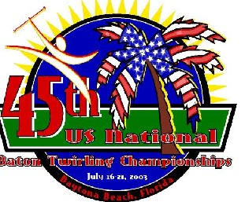
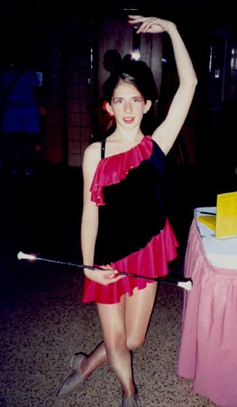
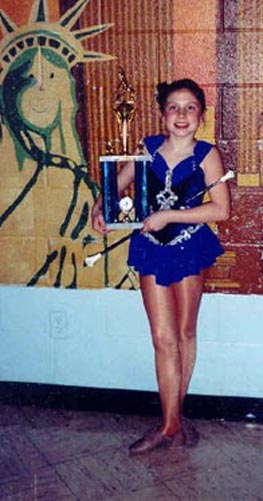
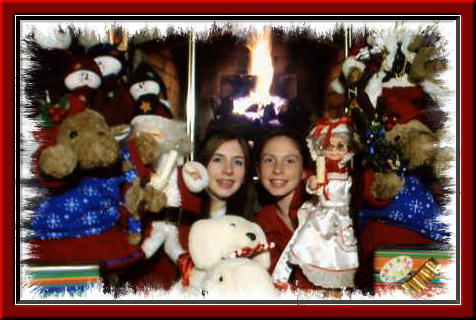

Children of my son Danny and his wife Nancy
Cailey and Keira are the talented daughters of my son Danny and his wife Nancy. These two are competitive baton twirlers — Cailey earned 2nd Place at Nationals as part of a team, and Keira brought home a 1st Place Trophy in a local solo competition. Whether they're twirling on stage or posing with all their stuffed animal friends at Christmas, these sisters always shine.

The Twirlers
Cailey — 13 yrs old
Keira — 10 yrs old
Christmas 2005